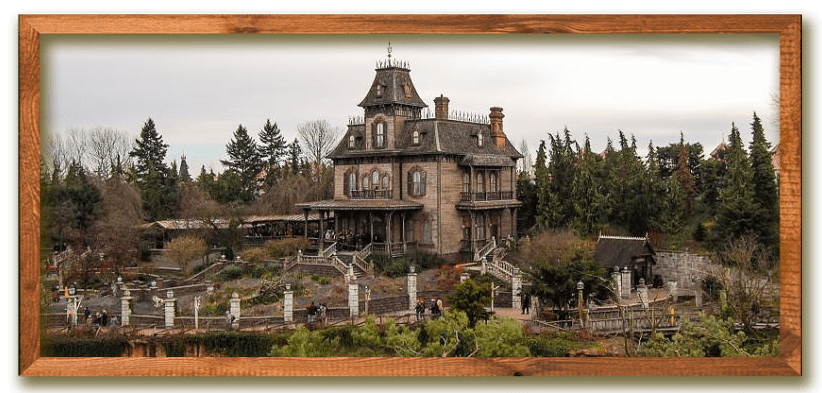
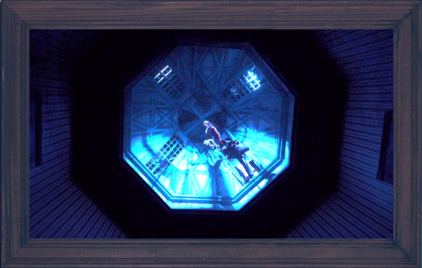

La visite du Manoir
Si vous souhaitez visiter Phantom Manor en vidéo, cliquez ici

L'ancien domaine abandonné de Ravenswood se trouve au sommet d'une petite colline surplombant Thunder Mesa. À l'approche, nous pouvons voir les volets bouger dans le vent et... Est-ce une forme dans l'une des fenêtres à l'étage ? Nous sommes encore trop loin pour en être sûr. Passons la vieille grille rouillée et remontons le chemin vers l'entrée.
Les vieux jardins sont délabrés et envahis par la végétation à l'abandon, mais on devine qu'ils ont été d'une beauté extraordinaire à l'époque. À l'intérieur d'un vieux belvédère, un service à thé est toujours là sur la table alors que le tintement étrange d'une vieille boîte à musique nous accompagne sur notre chemin. En se promenant dans le pavillon de jardin vide avec sa fontaine délabrée, il semble resonner de la musique et des voix dans le vent.
Mélanie et Henry Ravenswood
Nous arrivons enfin à la porte d'entrée. Après un court moment, un sinistre majordome ouvre la lourde porte et nous invite à entrer. Le foyer est dominé par un lustre orné auquel des toiles d'araignée poussiéreuses sont suspendues. Au mur est accroché un tableau de Mélanie et de son père. Soudain, une voix profonde d'outre-tombe retentit dans la pièce, et nous conte l'histoire des lieux...
Un panneau mural glisse et nous entrons dans une galerie octogonale. Nous remarquons des peintures de Mélanie, accompagnée de ses prétendants, accrochées aux quatre coins des murs alors que de sinistres candélabres semblent nous observer d'en haut. Le panneau mural s'est fermé et il ne semble pas y avoir d'autre porte. Alors que la voix fantomatique se fait entendre à nouveau, les murs semblent soudain s'étirer.
À mesure que la pièce grandit, les peintures révèlent leurs macabres secrets. Le destin des quatre prétendants est enfin révélé : ils sont tous morts prématurément…
Soudain, les lumières s'éteignent et nous assistons à une scène tragique au-dessus de nous ; dans le grenier, on peut voir le Phantom tenant un noeud coulant alors que la foudre illumine cette scène morbide.
